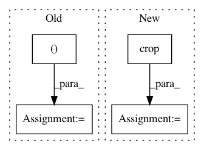

648c808a170a22d2cd6b0adbf2e680496d183661,dataset/models/tf/refinenet.py,RefineNet,head,#Any#Any#Any#Any#Any#,83
Before Change
upsample_args = cls.pop("upsample", kwargs)
upsample_args = {**kwargs, **upsample_args}
with tf.variable_scope(name):
x = cls.upsample((inputs, targets), **upsample_args)
x = conv_block(x, layout="t", filters=num_classes, kernel_size=1, **kwargs)
return x
@classmethod
After Change
with tf.variable_scope(name):
//x = cls.upsample((inputs, targets), **upsample_args)
x = conv_block(inputs, layout="t", filters=num_classes, kernel_size=1, **kwargs)
x = cls.crop(x, targets, data_format=kwargs.get("data_format"))
return x
@classmethod
def encoder(cls, inputs, base_class, name="encoder", **kwargs):
In pattern: SUPERPATTERN
Frequency: 4
Non-data size: 4
Instances
Project Name: analysiscenter/batchflow
Commit Name: 648c808a170a22d2cd6b0adbf2e680496d183661
Time: 2017-12-15
Author: a.kozhevin@analysiscenter.ru
File Name: dataset/models/tf/refinenet.py
Class Name: RefineNet
Method Name: head
Project Name: AlexEMG/DeepLabCut
Commit Name: e997ef25f3ef8a0922b87da7ce3278a2d713a27c
Time: 2018-11-13
Author: arne.f.meyer@gmail.com
File Name: deeplabcut/generate_training_dataset/frame_extraction.py
Class Name:
Method Name: extract_frames
Project Name: kenshohara/3D-ResNets-PyTorch
Commit Name: 2c6caaa39f272e0280533159e3dbc5209dddf62f
Time: 2018-11-01
Author: kensho.hara@aist.go.jp
File Name: spatial_transforms.py
Class Name: CornerCrop
Method Name: __call__
Project Name: geometalab/OSMDeepOD
Commit Name: a59e0476e44ee53a62a103c95f542ff8b8f7ff06
Time: 2015-09-30
Author: samuel.kurath@gmail.com
File Name: out/production/OSM-Crosswalk-Detection/service/ImageGenerator.py
Class Name: ImageGenerator
Method Name: generate